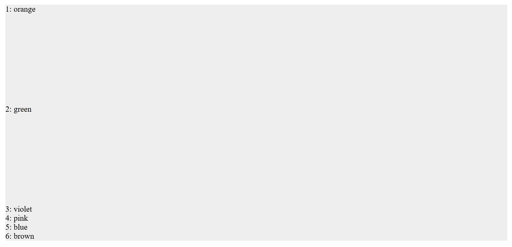
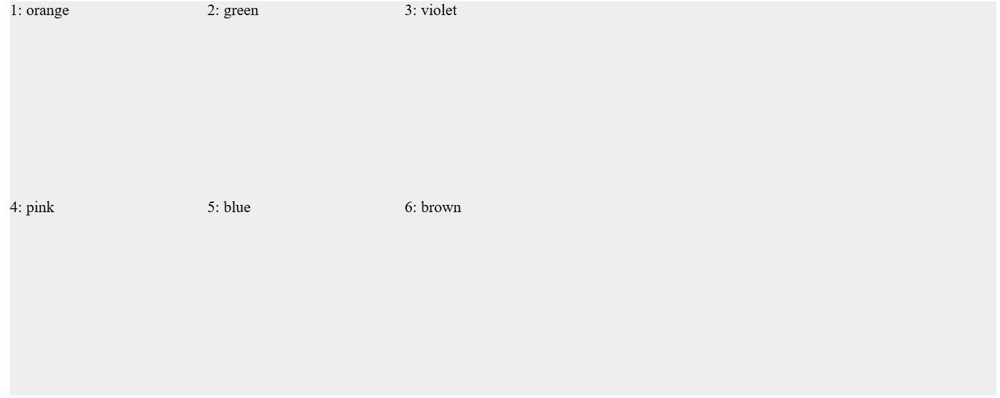
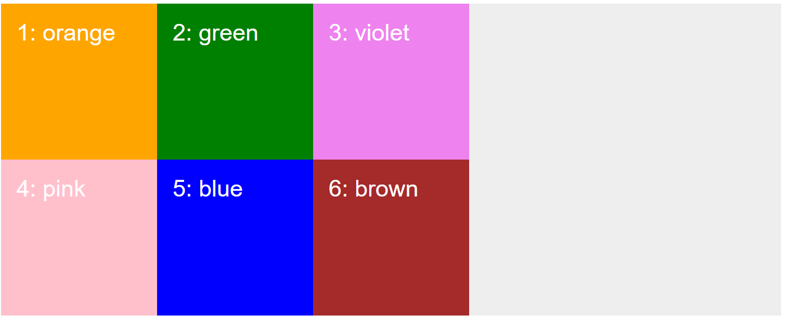
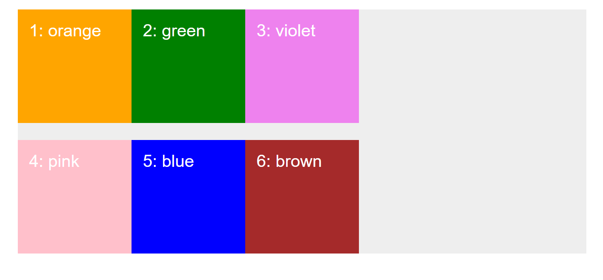
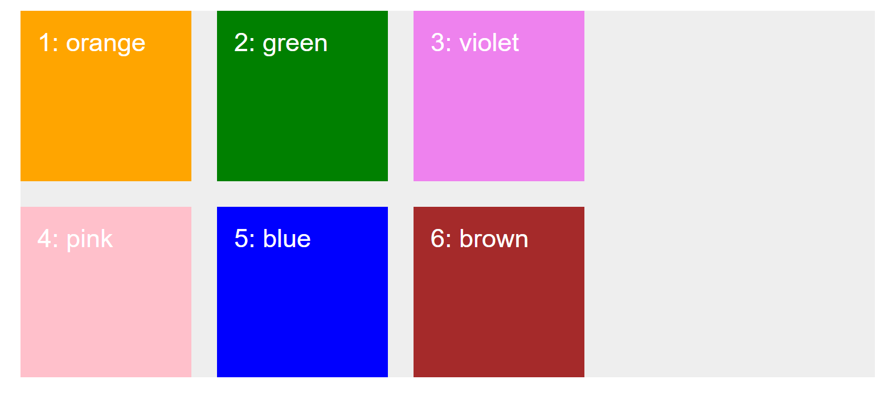

Our First CSS Grid
<div class="container">
<div class="item item--1">1: orange</div>
<div class="item item--2">2: green</div>
<div class="item item--3">3: violet</div>
<div class="item item--4">4: pink</div>
<div class="item item--5">5: blue</div>
<div class="item item--6">6: brown</div>
</div>
.container {
background-color: #eee;
width: 1000px;
margin: 30px auto;
}
Turning an element into a grid container
To turn an element into a grid container, we set its display property to grid.
.container {
display: grid;
}
Defining rows and columns
We can use grid-template-rows to define the height and structure of rows within a CSS Grid layout.
Assume we want two rows in our grid, each 200px in height:
.container {
display: grid;
grid-template-rows: 200px 200px;
}
This creates two tracks for the rows.
Similarly, we can use grid-template-columns to define the width and structure of columns within a CSS Grid layout.
Assume we want three columns in our grid, each 200px wide:
.container {
display: grid;
grid-template-rows: 200px 200px;
grid-template-columns: 200px 200px 200px;
}
This creates three tracks for the columns.
Complete the set-up:
.item {
padding: 20px;
font-size: 30px;
font-family: sans-serif;
color: white;
}
.item--1 {
background-color: orange;
}
.item--2 {
background-color: green;
}
.item--3 {
background-color: violet;
}
.item--4 {
background-color: pink;
}
.item--5 {
background-color: blue;
}
.item--6 {
background-color: brown;
}
Adding gutters with row-gap and column-gap
We can have space between the grid items and this is called a gutter.
row-gap
Adds vertical spacing (gutter) between adjacent rows in a grid layout.
.container {
display: grid;
grid-template-rows: 200px 200px;
grid-template-columns: 200px 200px 200px;
row-gap: 30px;
}
column-gap
Adds horizontal spacing (gutter) between adjacent columns in a grid layout.
.container {
display: grid;
grid-template-rows: 200px 200px;
grid-template-columns: 200px 200px 200px;
row-gap: 30px;
column-gap: 30px;
}
If you want to use same-sized gutter in the row and column, you can use the gap property.
Last modified: 06 February 2025